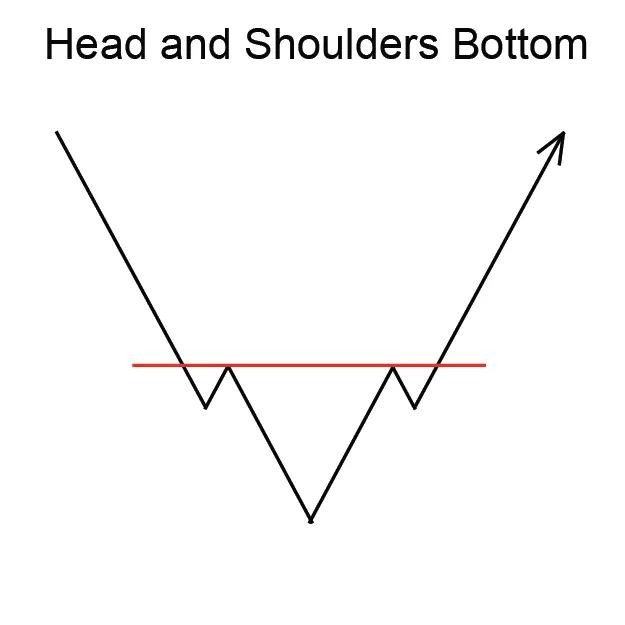
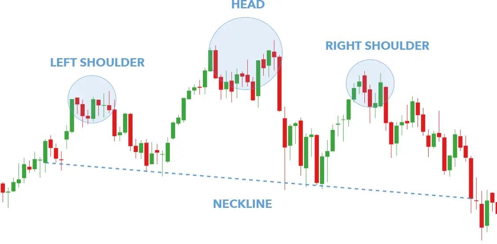

"इनवर्टेड हेड और शोल्डर पैटर्न" एक रिवर्सल पैटर्न होता है जो एक गिरावट दौरे के दौरान गठित होता है और एक ऊपरी
प्रवृत्ति का संकेत देता है। यह तीन पिंजरों द्वारा गठित होता है, जिनमें से एक होता है हेड और दो होते हैं शोल्डर्स।
हेड सबसे निम्न स्तर पर होता है और शोल्डर्स हेड से ऊपर होते हैं।
इनवर्टेड हेड और शोल्डर पैटर्न को पहचानने के लिए, ट्रेडर्स आम तौर पर तीन पिंजरों की तलाश करते हैं।
वे हेड को सबसे निम्न बिंदु के रूप में पहचानते हैं और शोल्डर्स को हेड से ऊपर के बिंदु के रूप में पहचानते हैं।
इनवर्टेड हेड और शोल्डर पैटर्न एक विश्वसनीय रिवर्सल पैटर्न होता है, हालांकि यह हमेशा सही ढंग से काम नहीं करता है।
ट्रेडर्स को अन्य बाज़ार संकेतों को भी ध्यान में रखना चाहिए, जैसे की वॉल्यूम और RSI (Relative Strength Index),
इस पैटर्न को सही तरीके से खोजने और एक लाभकारी व्यापार को लागू करने के लिए।
इनवर्टेड हेड और शोल्डर पैटर्न को व्यापार करने के लिए, ट्रेडर्स आमतौर पर हेड के ऊपर एक स्टॉप-लॉस लगाते हैं।
लाभ का लक्ष्य आमतौर पर इनवर्टेड हेड और शोल्डर पैटर्न की पूरी गहराई होती है।
